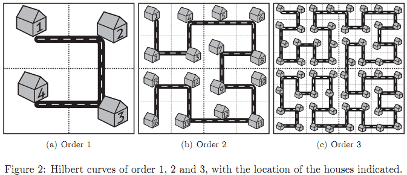

With a growing desire for modernization in our increasingly larger cities comes a need for new street designs. Chris is one of the unfortunate city planners responsible for these designs. Each year the demands keep increasing, and this year he has even been asked to design a completely new city.
More work is not something Chris needs right now, since like any good bureaucrat, he is extremely lazy. Given that this is a character trait he has in common with most computer scientists it should come as no surprise that one of his closest friends, Paul, is in fact a computer scientist. And it was Paul who suggested the brilliant idea that has made Chris a hero among his peers: Fractal Streets! By using a Hilbert curve, he can easily fill in rectangular plots of arbitrary size with very little work.
A Hilbert curve of order 1 consists of one "cup". In a Hilbert curve of order 2 that cup is replaced by four smaller but identical cups and three connecting roads. In a Hilbert curve of order 3 those four cups are in turn replaced by four identical but still smaller cups and three connecting roads, etc. At each corner of a cup a driveway (with mailbox) is placed for a house, with a simple successive numbering. The house in the top left corner has number 1, and the distance between two adjacent houses is 10m.
The situation is shown graphically in figure 2. As you can see the Fractal Streets concept successfully eliminates the need for boring street grids, while still requiring very little effort from our bureaucrats.

As a token of their gratitude, several mayors have offered Chris a house in one of the many new neighborhoods built with his own new scheme. Chris would now like to know which of these offerings will get him a house closest to the local city planning office (of course each of these new neighborhoods has one). Luckily he will not have to actually drive along the street, because his new company "car" is one of those new flying cars. This high-tech vehicle allows him to travel in a straight line from his driveway to the driveway of his new office. Can you write a program to determine the distance he will have to fly for each offier (excluding the vertical distance at takeoff and landing)?